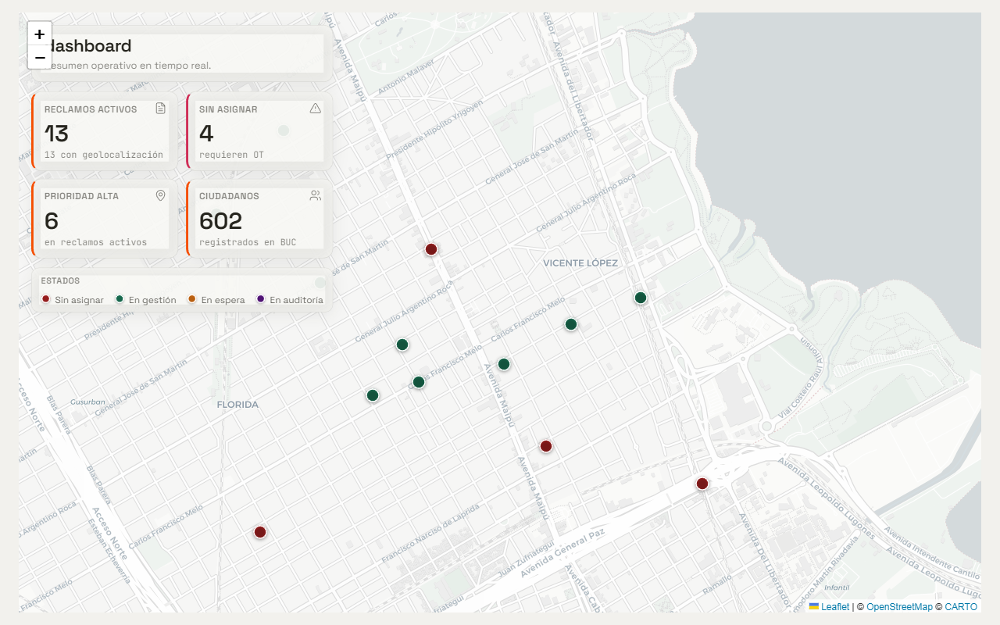
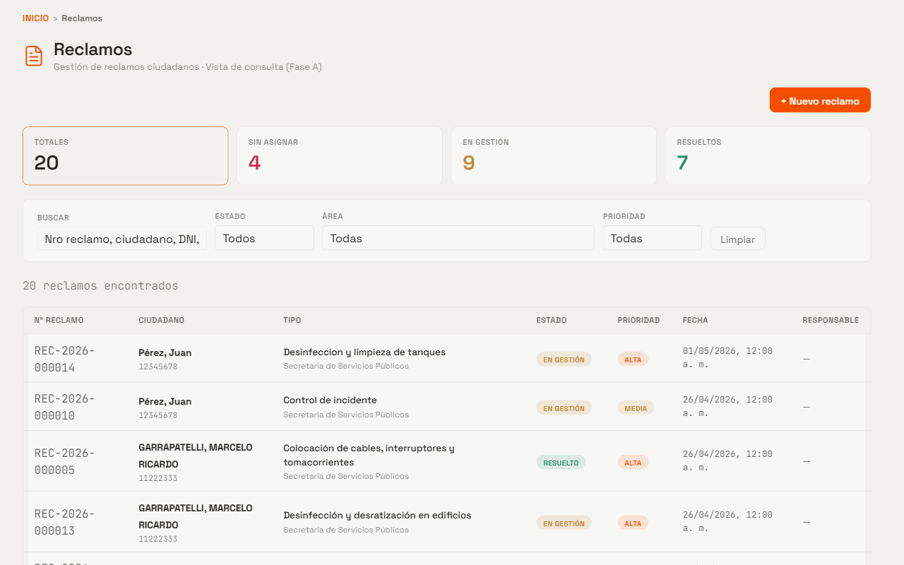
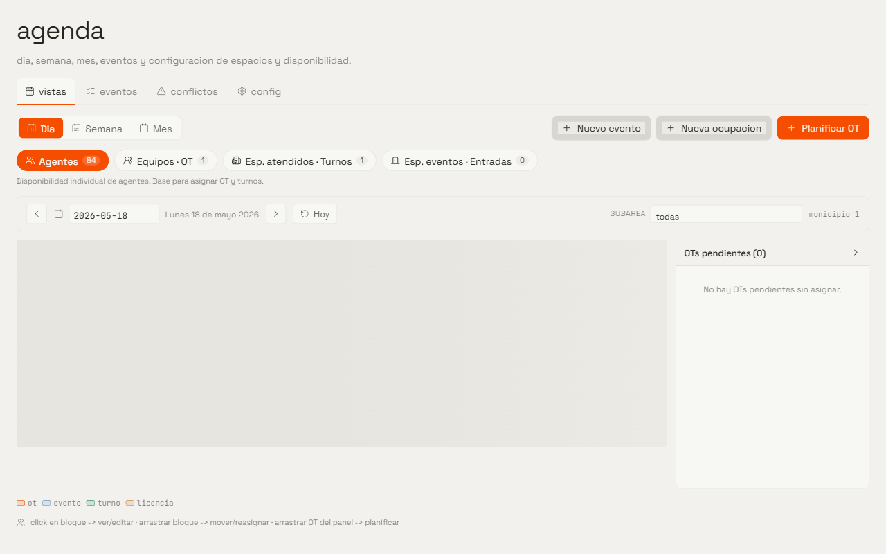
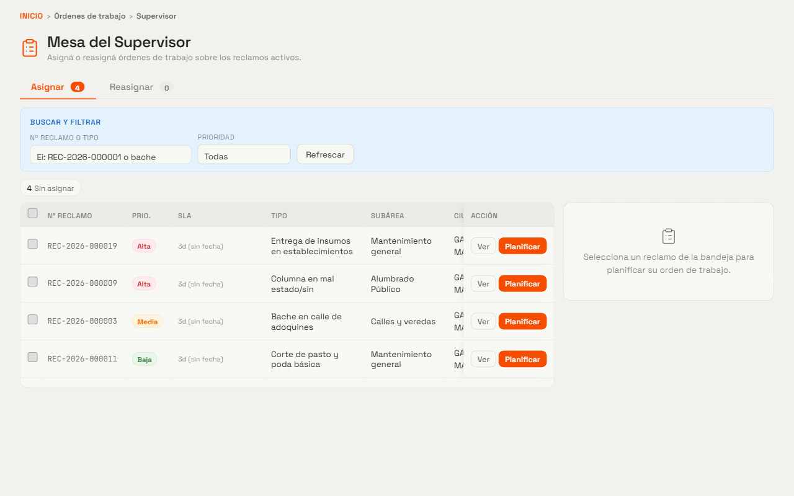
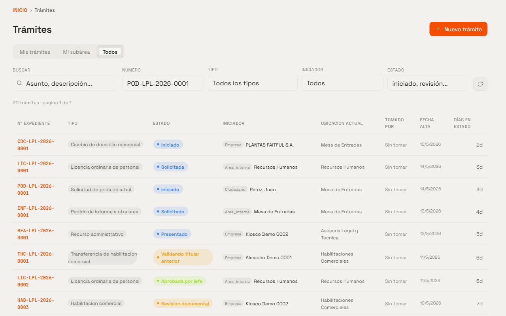
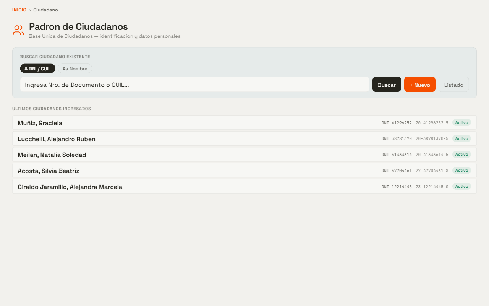

Tiempo real
Cada reclamo entra al circuito en el momento. Estados, asignaciones y vencimientos de SLA se actualizan al instante para que nadie llegue tarde.
ZARIS unifica reclamos, órdenes de trabajo, agenda de recursos, trámites administrativos y atención ciudadana en una experiencia coherente, trazable y construida sobre el padrón único de personas.
Diseñado para gobiernos locales
ZARIS no es un módulo más sobre el sistema existente. Es la capa transversal que conecta lo que el vecino reclama, lo que el área resuelve y lo que el funcionario firma.
Cada reclamo entra al circuito en el momento. Estados, asignaciones y vencimientos de SLA se actualizan al instante para que nadie llegue tarde.
Toda acción queda registrada: quién la hizo, cuándo, sobre qué. La auditoría es parte del producto, no una funcionalidad agregada.
Una sola Base Única de Ciudadanos. Un mismo vecino no se duplica entre áreas: el reclamo, el turno y el trámite hablan de la misma persona.
Acceso granular con SSO. Cada usuario ve exactamente los módulos que su rol necesita: un supervisor de obras no ve trámites de licencias.
La suite, módulo por módulo
Todo lo que el municipio necesita para operar de cara al vecino y puertas adentro. Diseño coherente, datos compartidos, una sola sesión.
Tablero ejecutivo
El dashboard cruza reclamos activos, prioridades, ciudadanos del padrón y geolocalización. Permite ver en un instante qué pasa, dónde pasa y qué requiere atención inmediata.


Reclamos
Cada reclamo se carga una vez, queda numerado de forma correlativa (REC-AAAA-XXXXXX) y avanza por un circuito visible. Estados, SLA, asignaciones y subreclamos quedan a la vista del operador y del supervisor.
Agenda de recursos
Agentes, equipos y espacios físicos comparten un calendario único. Vista diaria, semanal y mensual. Drag & drop para reasignar, detección automática de conflictos y horarios laborales multi-rango con rotaciones programables.


Órdenes de trabajo
El supervisor planifica las OTs desde el reclamo mismo: elige el agente o equipo, ve sus huecos libres y agenda en una sola pasada. El agente toma sus OTs desde su mesa; el auditor cierra el ciclo controlando la calidad antes de marcar el reclamo como resuelto.
Trámites administrativos
Cada tipo de trámite tiene su propio FSM versionado: estados, transiciones, documentos requeridos y firmas. Habilitaciones comerciales, licencias, pedidos de informe, recursos administrativos — cada flujo se modela una vez y todos los expedientes lo siguen.


Padrón único · BUC
La Base Única de Ciudadanos centraliza datos personales, contactos y vínculos con empresas. Búsqueda inteligente por DNI, CUIL, teléfono normalizado o texto libre. Nada de tablas paralelas por área.
La transparencia no es un módulo. Es la consecuencia de un sistema bien diseñado.
Filosofía de producto · ZARIS
Por qué ZARIS
No adaptamos un CRM genérico al sector público. ZARIS nace del trabajo diario en gestión local y entiende su lógica, sus áreas, sus circuitos y sus restricciones.
El operador no salta entre sistemas. Reclamos, agenda, trámites, padrón — todo en una experiencia coherente con permisos por módulo y rol.
Un reclamo deriva en una OT que toma un agente del equipo de Mantenimiento. El expediente queda vinculado al ciudadano. Todo conectado, sin reingresar nada.
Probado con padrones de cientos de miles de vecinos, decenas de subáreas y catálogos de cientos de tipos de reclamo y trámite. El rendimiento se mide y se mantiene.
Migraciones de catálogos desde CSV, seeds idempotentes, deploys reproducibles. La puesta en marcha no es un proyecto de un año.
Autoservicio público para turnos y reservas con QR. El vecino resuelve solo lo que puede resolver solo. El municipio se concentra en lo que requiere atención humana.
Cada acción tiene autor, fecha y traza. Las bajas son lógicas, los historiales son append-only. La transparencia no se reporta: se consulta.
Coordinamos una demo guiada por nuestro equipo, con datos similares a los de tu municipio. Sin compromiso, sin formularios extensos.